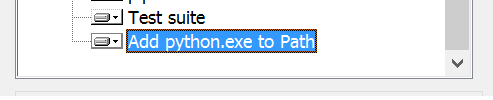
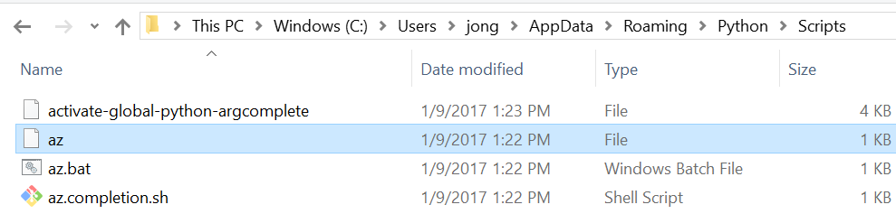
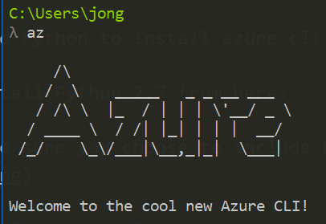

This post will show you how to create a Power BI Embedded Workspace Collection via the new Azure CLI 2.0. People typically create Workspace Collections via the Azure Portal, but that requires clicks and take more time than just doing it in the command line.
IMPORTANT: You cannot get the Power BI Embedded Access Keys using this method. I’m working with the CLI team to get that implemented soon. In the mean-time, you have to go to the portal to get the Access Keys.
1. Install Python
You need Python to install azure-cli via pip.
1. Install Python 2.7 from here:
2. Make sure you choose to include Python in your PATH:

2. Install Azure CLI
1. Open a command prompt and execute the following:
|
You will see this when it is finished:

3. Add Python Scripts to PATH
1. Find a path similar to this one: C:\Users[user]\AppData\Roaming\Python\Scripts add it to your environment PATH variable. I say ‘similar’ because it might be under ‘AppData’ local or under the versioned Python folder inside of ‘Roaming’
You will see the following when you open that path in Windows Explorer. Notice “az”. If you don’t see that, then the pip install didn’t work.

4. Test az
1. Close all your command prompts, open a new one and run the following:
|
You will see the following output:

5. Login to Azure
1. Run the following command to login:
|
You will see a message like the following:
To sign in, use a web browser to open the page https://aka.ms/devicelogin and enter the code BVVHR4DRF to authenticate.
2. Go to that URL, enter that code, login with the same account that is assigned to your Azure subscription and then come back to the command prompt. You will see your Azure Subscription metadata in JSON format.
6. Set Current Subscription
This will make sure the Power BI Embedded Resource is created in the right subscription. It sets the subscription as the “current” subscription to any further command will be executed against that subscription.
1. Run the following command to set the current subscription
Replace {subscription id} with your Azure subscription id
|
2. Run the following command to test if the current subscription is correct:
|
7. Create an Azure Resource Group
You can either create a new one or use an existing one. If you want to use an existing one skip to the next step.
1. To create a new Resource Group, execute the following command.
Replace ‘westus’ with your desired location and replace ‘jong-rg1’ with your desired Resource Group name.
|
8. Deploy Power BI Workspace Collection to Azure Resource Group
Now we want to deploy a new instance of a Power BI Workspace Collection to the Resource group we just created.
You have two options below, with both options you need to:
Replace jong-rg1 with your resource group name
Replace jong-pbie-1 with your desired Power BI Collection Workspace name.
Replace westus with your desired location.
Option 1: Use this Command Line Script
Download this pbie.cmd file I created and run this command. It’s just a wrapper around option 2 below.
|
Option 2: Execute the Command Directly
|
You will see the following output - which means your Power BI Embedded Workspace Collection has been created.
See my How to Embed and Filter a Power BI Report with the new Power BI Embedded JavaScript API blog post for instructions on how to create Power BI Workspaces within this Workspace Collection.
|

IMPORTANT: You cannot get the Power BI Embedded Access Keys using this method. I’m working with the CLI team to get that implemented soon. In the mean-time, you have to go to the portal to get the Access Keys.